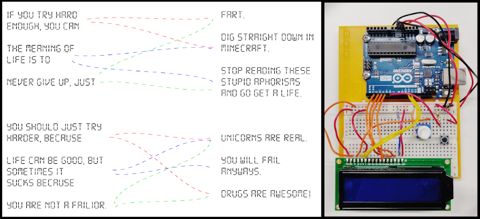

I have a lot of interest towards all kinds of embedded systems, but I figured out that I still don't have any
actual experience in working with them. I wanted to do something about that and my classmate was kind
enough to lend me his Arduino Starter Kit.
I studied the basics for a couple of days and when I felt confident enough, I carried on with my own project. I'm a big friend of dark humour, so an aphorism generator felt like a fun idea to do.
I had a clear idea about the code and the algorithm, and I had little to no problems writing it. I built this project based on instructions where a "tilt switch" was used, which meant that you would have to shake the arduino to activate it. I wanted to switch it to a pressable button and that worked out surprisingly well. My biggest challenge was getting the first row of the led-screen to stay still as a "header" and to have the actual aphorism scrolling on the bottom row. After a bunch of trial and errors, I used Google to find an answer for my problem. I managed to find a good solution quite soon from Arduino's forum.
I studied the basics for a couple of days and when I felt confident enough, I carried on with my own project. I'm a big friend of dark humour, so an aphorism generator felt like a fun idea to do.
I had a clear idea about the code and the algorithm, and I had little to no problems writing it. I built this project based on instructions where a "tilt switch" was used, which meant that you would have to shake the arduino to activate it. I wanted to switch it to a pressable button and that worked out surprisingly well. My biggest challenge was getting the first row of the led-screen to stay still as a "header" and to have the actual aphorism scrolling on the bottom row. After a bunch of trial and errors, I used Google to find an answer for my problem. I managed to find a good solution quite soon from Arduino's forum.

My thoughts about this project
It felt refreshing to learn something brand new, even though fiddling around with the wires and electricity was a little intimidating at first. I had a vision in my head of how I would attach the Arduino to my computer and it starts to smoke and spark, and the whole building would have a power outage. Maybe my fears were quite exaggerated, but at least it kept me being super careful with the wirings.
After all, this two-day project was a really fun and refreshing experience. I got to build something that might hopefully make other people laugh as well. I also got to dip my toes into the world of embedded systems, which was much needed.
A few highlights of this project:
It felt refreshing to learn something brand new, even though fiddling around with the wires and electricity was a little intimidating at first. I had a vision in my head of how I would attach the Arduino to my computer and it starts to smoke and spark, and the whole building would have a power outage. Maybe my fears were quite exaggerated, but at least it kept me being super careful with the wirings.
After all, this two-day project was a really fun and refreshing experience. I got to build something that might hopefully make other people laugh as well. I also got to dip my toes into the world of embedded systems, which was much needed.
A few highlights of this project:
- My first experience with embedded systems
- It was fun to get to bring out my sense of humour
- I gained confidence pretty fast and I got courageous enough to apply my own ideas
- Switching the tilt switch to a normal pressable button turned out to be pretty easy
Go back

GitHub